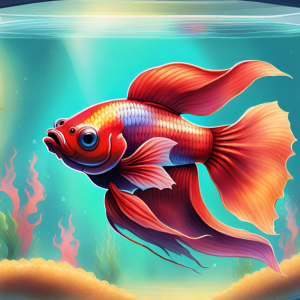
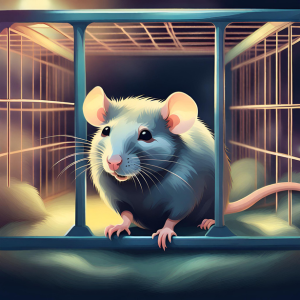

There are numerous reasons why someone might want a pet. For many people, pets provide companionship and emotional support, offering unconditional love and loyalty. Pets can alleviate feelings of loneliness and stress, providing constant companionship and a sense of purpose. Additionally, caring for a pet can promote a sense of responsibility and routine, as they require regular feeding, grooming, and exercise. Pets also encourage physical activity and outdoor time, whether it's walking a dog or playing with a cat. Furthermore, studies have shown that owning a pet can have numerous health benefits, including lower blood pressure, reduced risk of heart disease, and improved mental well-being. Overall, the bond between humans and animals can be deeply fulfilling and enriching, making pets an invaluable addition to many people's lives.
Easy pets
Where to start...
Pet Difficulty Levels
Pet
Betta
Rodent
Lizard
Feeding
Simple, low maintenance
Specific diet, feeding scheduale
Complex diet, specialized requirment
Training
None required
Requires consistent training
Challenging to train
Grooming
None required
Minimal grooming needed
Regular grooming required
Being properly prepared for a new pet is crucial for both the well-being of the animal and the satisfaction of the owner. Firstly, adequate preparation ensures that the pet's basic needs are met, including proper nutrition, shelter, and healthcare. This helps to prevent health issues and ensures the pet's physical and emotional well-being. Additionally, proper preparation involves understanding the specific requirements of the chosen pet species, such as environmental conditions, socialization needs, and behavioral characteristics. This knowledge enables owners to create a suitable living environment and provide appropriate mental and physical stimulation for their pet. Furthermore, being prepared financially is essential, as pet ownership comes with various expenses, including food, veterinary care, grooming, and supplies. Being financially ready ensures that unexpected costs can be covered, such as medical emergencies or unforeseen expenses related to the pet's care. Overall, proper preparation sets the foundation for a fulfilling and successful relationship between owner and pet, promoting a lifetime of companionship, happiness, and well-being.
Betta Fish

AI Betta Fish
Basic starter equipment for a betta fish includes a suitable tank, preferably 5 gallons or larger, equipped with a lid to prevent jumping. A heater to maintain a stable water temperature between 76-82°F (24-28°C) is essential, along with a thermometer to monitor temperature fluctuations. A gentle filter is recommended to help maintain water quality by removing waste and debris, with options such as sponge filters or adjustable flow filters being suitable for bettas. Decorations such as silk or live plants, hiding spots, and smooth decorations should be provided to create a stimulating environment while preventing fin tearing. Additionally, a water conditioner to remove chlorine and chloramine from tap water, high-quality betta pellets or flakes for feeding, and a siphon for performing regular water changes are essential. With these basic equipment items, you can create a comfortable and healthy habitat for your betta fish.
Small Rodent

AI Pet Rat
Types of Rodents
Species
Description
Hamster
Small, nocturnal, come in various breeds and colors. Requires large cage with tunnels.
Gerbil
Small, active and social. Require a spacious enclosure and hay based diet.
Rat
Highly intelligent and social. Require secure encloser.
Chinchilla
Small, known for playful nature. Large encloser required.
Basic starter equipment for a small rodent, such as a hamster, gerbil, mouse, or guinea pig, includes a suitable cage or enclosure with ample space for movement and exploration. The size of the cage will vary depending on the species, but it should be large enough to accommodate bedding, food and water dishes, toys, and hiding spots. For bedding, choose a safe and absorbent material such as aspen shavings, paper-based bedding, or hay. Provide a food dish and a water bottle or dispenser designed for small animals to ensure they have access to fresh food and water at all times. Toys and enrichment items such as tunnels, wheels, chew toys, and nesting materials are essential for mental stimulation and exercise. Additionally, ensure the cage has proper ventilation and is placed in a quiet area away from drafts and direct sunlight. With these basic supplies, you can create a comfortable and stimulating environment for your small rodent companion.
Reptiles
AI Pet Lizard
Basic starter equipment for reptiles includes a suitable enclosure or tank with adequate space for the specific species' size and needs. The enclosure should have secure lids or covers to prevent escapes and maintain proper temperature and humidity levels. Depending on the species, you may need to provide heating elements such as heat lamps, ceramic heat emitters, or under-tank heating pads to create a warm basking area and maintain overall temperature gradients within the enclosure. Additionally, appropriate substrate is essential for reptiles to burrow, dig, or provide traction, with options including reptile carpet, sand, coconut fiber, or cypress mulch, chosen based on the species' natural habitat and specific requirements. Access to clean water in a shallow dish or bowl is vital for hydration, soaking, and maintaining humidity levels. Decorations such as rocks, branches, and hides provide environmental enrichment and opportunities for climbing, basking, and hiding. UVB lighting may also be necessary for species that require it for proper calcium metabolism and overall health. With these basic supplies, you can create a comfortable and enriching habitat for your reptile companion.
Healthy Pet, Healthy Mind
Ai photo of happy owner and pet
Taking care of a pet can have numerous positive effects on a person's emotional and mental health. The companionship and unconditional love that pets provide can help reduce feelings of loneliness, anxiety, and depression. Interacting with a pet, such as petting, playing, or simply being in their presence, can release feel-good hormones like oxytocin and dopamine, which promote relaxation and happiness. Caring for a pet also gives individuals a sense of purpose and responsibility, as they must attend to their pet's needs, such as feeding, grooming, and exercise. This routine can provide structure and stability to daily life, which is particularly beneficial for those struggling with mental health issues. Additionally, the presence of a pet can encourage social interaction and physical activity, whether it's taking a dog for a walk or joining a pet-related community or group. Overall, the bond between humans and pets can significantly contribute to improved emotional well-being, offering comfort, support, and joy in both good times and challenging moments.
Reasons to NOT have a pet
Time Commitment: Pets require time and attention for feeding, grooming, exercise, and companionship. If someone has a busy schedule or frequently travels, they may not be able to dedicate enough time to properly care for a pet.
Financial Responsibility: Owning a pet comes with various expenses, including food, veterinary care, grooming, supplies, and potentially unexpected medical costs. If someone is on a tight budget or unable to afford these expenses, they may not be in a position to responsibly care for a pet.
Space Limitations: Some living situations, such as small apartments or rental properties with strict pet policies, may not be suitable for pets. Lack of adequate space can impact the pet's quality of life and limit their ability to exercise and explore.
Commitment and Long-Term Responsibility: Pets can live for many years, and adopting one is a long-term commitment. Some people may not be ready for the responsibility of caring for a pet throughout its entire lifespan, especially if their circumstances or priorities may change in the future.